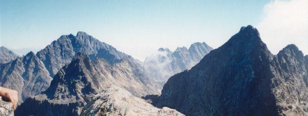

| Gerlach i Wysoka widziane z Rysów
fot. Sivy |
 |
Przeczytaj też: Jerzy Żuławski Na
Gierlachu
Tatry wzywają | Morskie Oko
| Wędrówka przez Siklawę, Zawrat, Rysy i Gerlach
| Gerlach, Rysy, Mięguszowiecka Przełęcz pod Chłopkiem
| Dolina Gąsienicowa | Dolina Pięciu Stawów Polskich | Zawrat | Tatry Zachodnie
| Giewont
| Ciemne Smreczyny
| Dolina Jaworowa
| Dolina Mięguszowiecka
| Hruby Wierch
| Szczyty
| Przepaście
| Stawy | Drzewa
| Pory roku | Szczęście | Wspinaczka | Zamarła Turnia | Śmierć
| Smutek
| Nic ponad Tatrami
Strona główna | Spis treści
| Spis autorów i tytułów
| Bibliografia